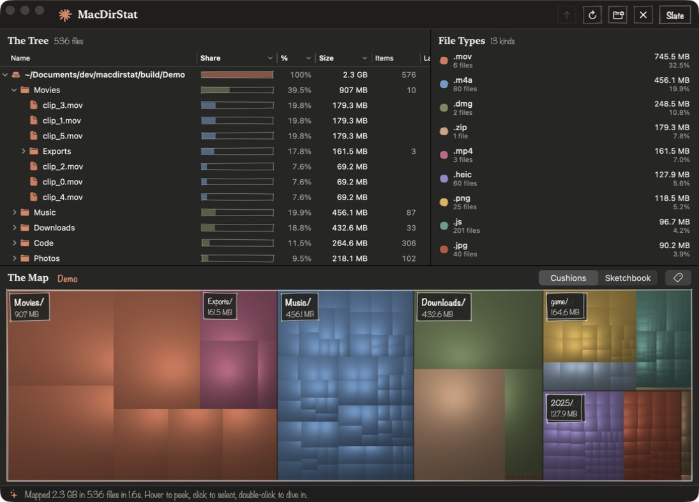

The two styles

Sketchbook

Cushions
| Style | Shading | Lines |
|---|---|---|
| Sketchbook | Nearly flat, with more grain. This is the default. | Pencil hatching on files at least 26 points on each side, fine edges on tiles, and wobbly outlines around top-level items and second-level folders. |
| Cushions | Van Wijk cushions, where each nested level adds a ridge to the lighting. | One thin seam around each top-level item. |
- Both styles use the same rectangles. They differ in ridge height and in the lighting and vector passes.
- Name tags appear on top-level items at least 80 by 30 points, and on second-level folders at least 120 by 60 points. ⌘L turns them off.